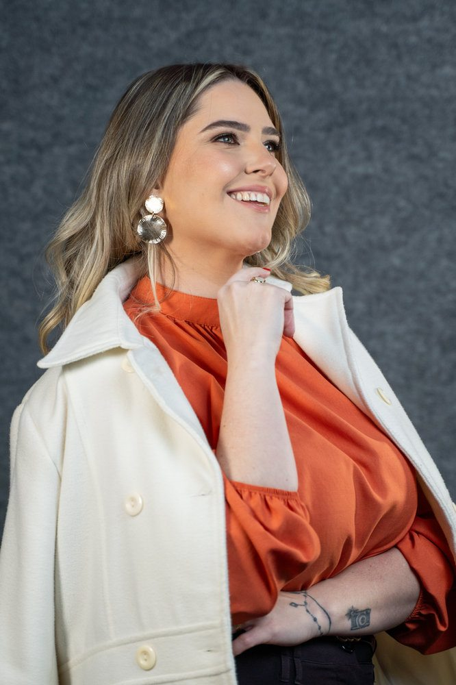
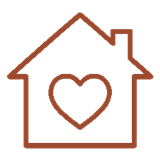
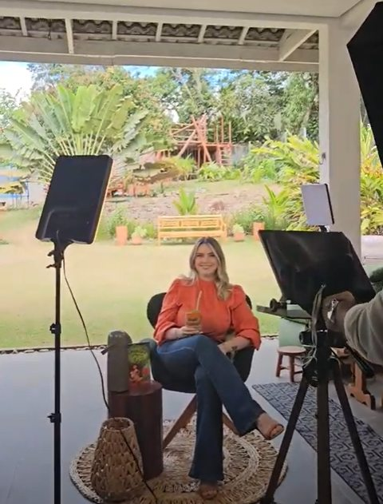
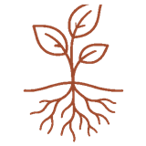
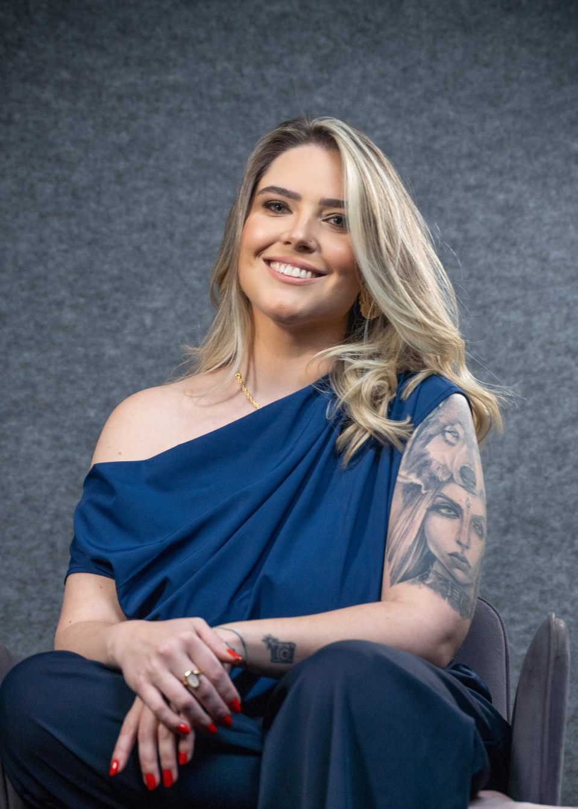
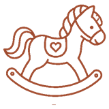
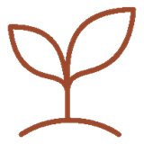
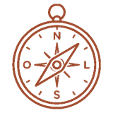

Mais clareza
Você compreende o que faz parte da educação sexual e deixa de associar o tema somente ao ato sexual.
Versão local para revisão.
Aprenda os fundamentos para falar com seus filhos sobre corpo, privacidade, consentimento, afeto e proteção, mesmo que você nunca tenha recebido essa orientação na sua própria infância.
8 aulas online + materiais complementares · acesso mediante cadastro
Cadastro rápido. O acesso gratuito não obriga a compra de nenhum outro módulo.



Antes de aprender o que conversar em cada idade, você precisa compreender os fundamentos da educação em sexualidade e o papel da família nesse processo.
Neste módulo, você aprenderá que educação sexual não significa simplesmente "falar sobre sexo". Ela também envolve corpo, saúde, emoções, autonomia, limites, consentimento, cuidado, proteção e relacionamento familiar.
Este não é um conteúdo superficial. É a base necessária para compreender o método e começar a construir conversas mais seguras dentro da sua família.
Educar não é antecipar. É preparar, orientar e proteger.
Neste vídeo, eu explico por que educação sexual não se resume a falar sobre sexo e como informação, diálogo e acolhimento podem ajudar a construir uma relação de confiança dentro da família.
Você não precisa ter todas as respostas. Precisa aprender a escutar, responder com clareza e manter aberta a porta para a próxima conversa.
Assistir no YouTubeMuitos adultos cresceram em famílias nas quais o corpo e a sexualidade eram tratados com silêncio, vergonha ou medo. Por isso, é natural sentir insegurança quando uma criança faz uma pergunta inesperada.

Quer educar de maneira diferente da forma como foi educadaNão é preciso começar com uma grande conversa. A educação acontece em pequenas oportunidades do cotidiano.
Informação também transforma a maneira como você escuta, compreende e orienta.
Você compreende o que faz parte da educação sexual e deixa de associar o tema somente ao ato sexual.
Você aprende a falar sobre o corpo e suas funções com uma linguagem natural e respeitosa.
Você entende como suas reações influenciam a disposição da criança para voltar a conversar.
Você começa a ensinar nomes corretos, privacidade, consentimento, autocuidado e limites corporais.
Uma base para compreender o tema antes de entrar nas orientações específicas de cada faixa etária.
Conheça a trajetória pessoal e profissional de Raphaela Spellmeier e o propósito que deu origem ao Método Educar é Proteger.
Entenda como o método está organizado e como transformar as aulas e os materiais em conversas aplicáveis à rotina da família.
Aprenda a nomear o corpo com clareza, ensinar os cuidados básicos e evitar que vergonha e apelidos atrapalhem a comunicação.
Compreenda como escutar, responder e ensinar que o "sim" e o "não" precisam ser respeitados.
Descubra por que sexualidade também envolve corpo, identidade, afeto, autoestima, cuidado, limites e relacionamentos.
Organize seus próprios conhecimentos para explicar nascimento e reprodução com verdade e linguagem adequada.
Reflita sobre autoestima, emoções, autocuidado e sobre as mensagens que transmitimos às crianças a respeito do próprio corpo.
Revise a educação que você recebeu, reconheça os ciclos que não deseja repetir e estabeleça uma nova intenção para sua família.
Tudo o que você precisa para começar com mais clareza e segurança.
Acesso gratuito
Comece pelos fundamentos
Assista online e avance no seu ritmo
Liberar meu acesso gratuitoImportante: o cadastro é necessário para criarmos seu acesso individual à plataforma e enviarmos as orientações de entrada para o seu e-mail. Não haverá cobrança, assinatura ou obrigação de adquirir os módulos pagos. O acesso gratuito libera somente o Módulo 0; os módulos por idade e o Módulo Bônus fazem parte das formações pagas.

Eu sou Raphaela Spellmeier. Eu quebrei o ciclo, e hoje ensino mães a darem aos filhos a conversa que elas mesmas não tiveram.
Minha experiência profissional sempre esteve ligada às histórias, à saúde íntima e à parte mais sensível da vida das pessoas. Ao longo dessa trajetória, percebi que muitos sofrimentos, medos e dificuldades começam no silêncio e na falta de orientação durante a infância.
Criei o Método Educar é Proteger para ajudar famílias a conduzirem essas conversas com informação, respeito, acolhimento e uma linguagem adequada a cada etapa do desenvolvimento.
Falar sobre sexualidade não tira a inocência. Informação adequada ajuda a construir cuidado, diálogo e proteção.
O módulo introdutório prepara a base. Depois, você pode continuar com orientações específicas para a idade do seu filho. Em todos os módulos pagos, você também recebe o Módulo Bônus.

0 a 5 anosPrimeiras descobertas do corpo, nomes corretos, privacidade, consentimento, curiosidades e proteção.
Conhecer módulo 6 a 10 anosPuberdade, perguntas difíceis, autonomia, higiene, situações reais, segurança digital e prevenção.
Conhecer módulo
11 a 13 anosMudanças corporais, emoções, relacionamentos, internet, autoestima, diálogo e limites.
Conhecer módulo
14 a 18 anosAutonomia, escolhas, relacionamentos, saúde, prevenção e segurança no ambiente digital.
Conhecer móduloReunimos aqui as respostas para ajudar você a começar com mais tranquilidade.
Sim. Você realiza um cadastro breve e recebe acesso ao conteúdo introdutório sem precisar adquirir outro módulo.
Não. O cadastro gratuito não obriga a compra de nenhum conteúdo. Se desejar continuar, você poderá escolher depois o módulo correspondente à idade do seu filho.
Ele apresenta fundamentos úteis para mães, pais e responsáveis com filhos em diferentes idades. As orientações específicas ficam nos módulos de 0 a 5, 6 a 10, 11 a 13 e 14 a 18 anos.
Sim. O conteúdo é online, na Eduzz, e pode ser acessado pelos dispositivos compatíveis com a plataforma.
Não. Você pode adquirir diretamente o módulo correspondente à idade do seu filho. O Módulo 0 estará incluído na compra.
Não. O Módulo Bônus está incluído na compra dos módulos por idade.
Com orientação e uma linguagem adequada, você pode transformar conversas difíceis em momentos de vínculo, cuidado e proteção.